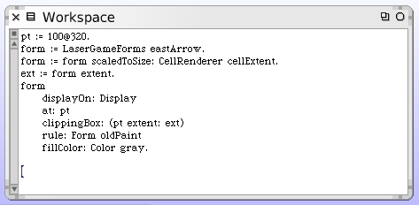
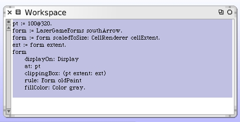

Drawing Push Hints On The Game Board
We want to draw our arrows onto the game board when the pointer is at specific places. We now have code that properly detects those conditions and which push direction to display. We have a way to obtain the correct arrow form from our forms cache.
A couple of design considerations include:
- The arrow forms are not to-scale for our board
- We need to know exactly where to draw the arrow forms
- The arrow hint should be drawn over the correct cell
- We need to ensure that "old" arrows don't clutter the game board
Let's go after the arrow forms scale problem first. Open up a workspace and execute this code. We get a nice little arrow that looks like it's the correct size.
The #scaledToSize: method handles creating the smaller version of our arrow form. We told it to create the smaller arrow at the same size as the cells themselves.
Let's confirm this works okay with one of the other arrows.
I didn't tell Squeak to perform a "restore display" before drawing the second arrow. It attempted to paint directly over the previous one and we see the picture does not look like we expected. That's a tip-off that we will need to ensure the cell is redrawn before we add our hint when it changes.